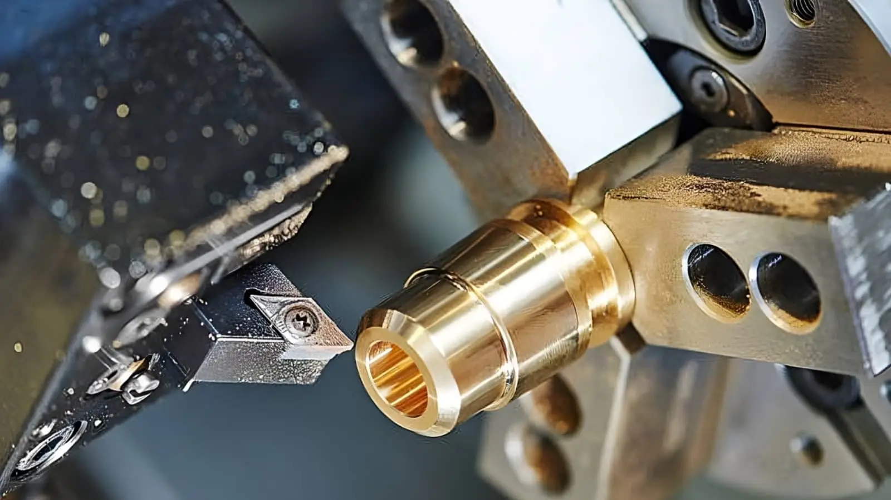

Qu'est-ce que le Tournage CNC ?

Le tournage CNC (Commande Numérique par Ordinateur) est un procédé d'usinage dans lequel une pièce tourne autour d'un axe tandis qu'un outil de coupe fixe ou mobile enlève la matière. Cette technique automatisée permet de produire des pièces cylindriques avec une précision et une répétabilité exceptionnelles.
Il est utilisé dans des industries variées, notamment l'aérospatial, l'automobile, et la fabrication de composants mécaniques de haute précision.
Composants d'un Tour CNC
- Mandrin : Maintient fermement la pièce à usiner.
- Broche : Permet à la pièce de tourner à des vitesses contrôlées.
- Outil de coupe : Enlève la matière pour façonner la pièce selon les spécifications.
- Chariot porte-outil : Déplace l'outil de coupe selon les axes X et Z pour effectuer les opérations.
- Système de commande numérique : Interface permettant de programmer les mouvements et paramètres d'usinage.
- Changeur d'outils automatique : Permet de changer rapidement entre différents outils pour réaliser des opérations complexes.
- Système de refroidissement : Réduit la chaleur générée pendant l'usinage et prolonge la durée de vie des outils.
- Glissières et guides : Assurent la précision des mouvements du chariot porte-outil.
Comment Mettre en Marche et Régler un Tour CNC
- Préparation : Vérifiez que la machine est propre, bien lubrifiée et exempte de tout obstacle.
- Installation de la pièce : Fixez solidement la pièce dans le mandrin et vérifiez son alignement.
- Configuration de l'outil : Installez l'outil de coupe approprié et effectuez un préréglage.
- Paramètres de coupe : Réglez la vitesse de rotation, l'avance et la profondeur de coupe en fonction du matériau.
- Test initial : Effectuez une passe d'essai pour vérifier les réglages.
- Lancement : Démarrez le programme CNC et surveillez les opérations pour détecter d'éventuelles anomalies.
Types d'Outils et Fraises pour le Tournage CNC
- Outils de coupe standards : Utilisés pour le dressage, le cylindrage et l'alésage.
Réalisé en combinant plusieurs trajectoires pour produire des géométries complexes. Souvent utilisé pour des pièces de haute précision dans l'aéronautique ou l'automobile.
Paramètres Cruciaux en Tournage CNC
Vitesse de Rotation
Déterminée par le matériau et le diamètre de la pièce, elle est calculée avec la formule :
n = (Vc * 1000) / (π * D),
où Vc est la vitesse de coupe et D le diamètre de la pièce.
Avance
Correspond à la distance parcourue par l'outil à chaque rotation de la pièce. Elle est choisie en fonction de la finition souhaitée et des contraintes d'usinage.
Profondeur de Passe
Définit l'épaisseur de matière enlevée par passe. Une profondeur élevée réduit le temps d'usinage mais peut augmenter les contraintes mécaniques.
Lubrification
Utilisez un lubrifiant adapté au matériau pour améliorer la finition de surface et prolonger la durée de vie de l’outil.
Lecture et Compréhension des Plans Techniques
Pour réaliser une pièce selon un plan :
- Identifiez les cotes critiques et les tolérances associées.
- Interprétez les symboles de finition et de rugosité.
- Planifiez les étapes d'usinage pour respecter les dimensions spécifiées.
Contrôle Qualité et Métrologie

Instruments Utilisés
- Pied à coulisse : Pour des mesures précises des diamètres et longueurs.
- Micromètre : Utile pour les dimensions nécessitant une grande précision.
- Comparateur : Vérifie les concentricités et les déviations.
- Jauge de filetage : Contrôle la précision des filets usinés.
- Rugosimètre : Permet de mesurer la rugosité et la qualité de finition des surfaces.
Vérification de la Conformité
Chaque pièce doit être mesurée et comparée aux tolérances pour garantir la qualité et l'ajustement.
Adaptation aux Matériaux
Les vitesses de coupe, avances et profondeurs de passe doivent être ajustées selon les matériaux :
- Acier : Vitesse de coupe faible, refroidissement intensif.
- Inox : Nécessite des outils robustes et une lubrification importante.
- Aluminium : Vitesse élevée, faible résistance mécanique.
- Plastiques : Vitesse modérée pour éviter la fonte ou la déformation.
Conseils pour l'Optimisation en Atelier
Pour améliorer la productivité et la qualité en atelier :
- Planifiez soigneusement les étapes de l’usinage en fonction des priorités.
- Formez les opérateurs à lire et interpréter les plans techniques.
- Maintenez un inventaire d'outils bien affûtés et adaptés aux matériaux usinés.
- Surveillez régulièrement les paramètres de vibration et d’usure des outils.